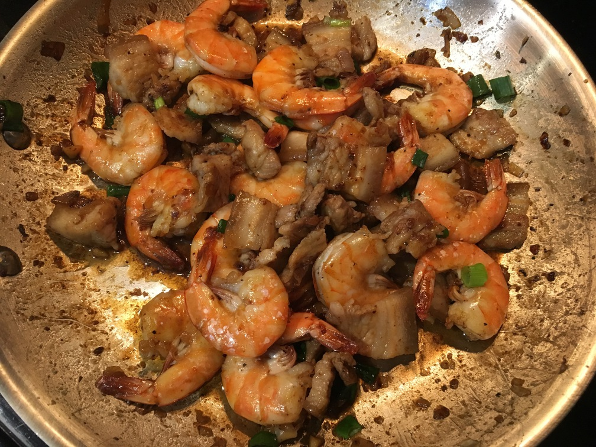

| Other | Meat | Veggie | Fruit |
|---|---|---|---|
| nuoc mam | pork belly | garlic | |
| pepper | shrimp | green onions | |
| salt | onion | ||
| sugar | shallot |
| instructions |
|---|
| Want a ratio of 2 shrimp : 1 pork belly sliced |
| Season both lightly with salt, pepper, and shallots |
| Golden minced shallots and garlic |
| Stir fry pork until no longer pink |
| Stir in shrimp |
| Add a ratio of 1 sugar : 1 nuoc mam, with some water |
| Simmer for 10 min |
| Add in sliced yellow onion and minced green onions |
| Cover and wait a few minutes to fully cook |